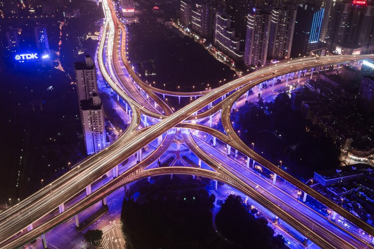

Dubaï ou DoubaïNote (en arabe : دبي / Dubayy, /dʊ.ˈbajj/) est la première ville des Émirats arabes unis (devant la capitale fédérale Abou Dabi). Située sur le golfe Persique, elle est capitale de
l'émirat de Dubaï, et compte plus de trois millions d'habitants. Elle forme, avec les villes de Charjah, Ajman et Oumm al Qaïwaïn, elles-mêmes capitales de leurs émirats respectifs, une agglomération
qui dépasse 3,5 millions d'habitants en 2022. Dubaï est également le premier port du pays.
Fondée au xviiie siècle, Dubaï reste un bourg modeste et isolé du monde qui vit essentiellement de la
pêche aux perles à la fin du xixe siècle. À cette époque, la ville et l'émirat qui l'entoure prennent de l'importance en participant à la création des États de la Trêve (en anglais : Trucial States) en 1853.
Elle connaît une période difficile pendant l'entre-deux-guerres, avant d'entrer de plein fouet dans la modernité dans la deuxième partie du xxe siècle. Elle participe à la création des Émirats arabes unis
actuels en 1971. Son émir en assure la vice-présidence.
Quoique n'étant pas la capitale des Émirats arabes unis, Dubaï est devenue la ville la plus connue de la fédération. Cette renommée est due notamment à la médiatisation de ses projets touristiques comme l'hôtel
Burj-al-Arab, l'hôtel le plus luxueux de Dubaï, au gigantisme de ses projets immobiliers comme les Palm Islands, presqu'île et archipel artificiels en forme de palmier, The World, archipel artificiel qui
reproduit la carte du monde, la Dubaï Marina à l'architecture particulière et gigantesque, ou encore l'immeuble le plus haut du monde, la Burj Khalifa. Ces projets, revendiqués par le gouvernement, sont
présentés comme étant un moyen de devenir d'ici quelques années[Depuis quand ?] la première
destination mondiale du tourisme de luxe et de devenir l'un des pôles mondiaux du tourisme familial, d'affaires, commercial, etc.
L'EVOLUTION DU BURJ KHALIFA
21 septembre 2004 : ouverture du chantier.
février 2005 : début de la construction des étages.
7 avril 2007 : réalisation du 120e étage pour 422,5 m : c’est le plus grand nombre d'étages pour un bâtiment.
21 juillet 2007 : Burj Khalifa devient le plus haut gratte-ciel du monde, culminant à 512,10 m et dépassant ainsi celle du voisin Taipei 101 à Taipei, Taïwan, détenteur du précédent record avec une
hauteur de 508 m.
17 janvier 2009 : la tour atteint sa hauteur finale, 828 m15.
8 octobre 2009 : l'extérieur de la tour est complètement terminé. Il ne reste plus que les travaux d’aménagement intérieur.
Le Dubaïland est le projet de création d'un ensemble de parcs à thèmes, situé à proximité de l'Arabian Canal. Il accueillera le Mall of Arabia, un immense centre commercial.
Annoncé le 1er mai 2006 par le gouvernement, le projet Bawadi prévoit d'amener le nombre de lits
d'hôtel dans l'émirat à 29 000, doublant ainsi la capacité hôtelière actuelle. Pour cela, une enveloppe de 27
milliards de US$ est allouée à ce projet, dont le plus grand complexe sera l'Asia avec 6 500 chambres,
soit le plus grand hôtel du monde.
LE RESAU ROUTIER
Le réseau routier est constitué de larges avenues et autoroutes, dont la Sheikh Zayed Road est l'exemple le plus connu. Ce réseau crée un maillage reliant les différentes zones résidentielles, de
travail et touristiques de l'agglomération de Dubaï. Afin de permettre la traversée du Khor Dubaï, le tunnel routier sous-marin de Shindanaga a été construit en bord de mer. Dubaï a aussi la réputation
d'être la ville des pays riches qui compte le plus d'accidents et de morts sur les routes.
On estime qu'il y a un accident toutes les trois minutes à Dubaï, ce qui contribue à l'engorgement du réseau routier. Pour financer les infrastructures routières, un télépéage, le salik, a été mis en place au 1er juillet 2007.
La sixième traversée du Khor Dubaï, un pont de douze voies de circulation20 (2×6 voies), de 1,7 km de longueur, 205 m de hauteur et d'une largeur de 64 m, est en cours de construction (en mars 2008).
La sixième traversée du Khor Dubaï, un pont de douze voies de circulation20 (2×6 voies), de 1,7 km de longueur, 205 m de hauteur et d'une largeur de 64 m, est en cours de construction .

LE RESEAU MARITIME
Le transport maritime est représenté par des bateaux-navettes en bois (les abras) qui traversent le Khor Dubaï en dix minutes et permettent de relier facilement Deira à Bur Dubaï.
Les infrastructures portuaires de l'émirat se sont largement développées ces dernières années et les ports de Dubaï ont largement profité de cette amélioration, puisqu'ils occupaient en 2004 la dixième place des
ports à conteneurs, derrière ceux de Los Angeles et de Hambourg.
La ville compte différents ports : le port de Jebel Ali, le port Rashid et le Khor Dubaï. Les deux premiers sont de grands ports qui accueillent des navires de gros tonnage et le dernier, plus
traditionnel, abrite les bateaux de transport en bois, les dhows, et est consacré au commerce avec l'Iran et les autres pays du golfe Persique.
Le réseau routier est constitué de larges avenues et autoroutes, dont la Sheikh Zayed Road est l'exemple le plus connu. Ce réseau crée un maillage reliant les différentes zones résidentielles, de travail et
touristiques de l'agglomération de Dubaï. Afin de permettre la traversée du Khor Dubaï, le tunnel routier sous-marin de Shindanaga a été construit en bord de mer. Dubaï a aussi la réputation d'être la ville des
pays riches qui compte le plus d'accidents et de morts sur les routes.
On estime qu'il y a un accident toutes les trois minutes à Dubaï, ce qui contribue à l'engorgement du
réseau routier. Pour financer les infrastructures routières, un télépéage, le salik, a été mis en place
au 1er juillet 2007.
AIR DUBAI
Emirates (Code AITA : EK ; code OACI : UAE) (en arabe : الإمارات romanisation : Al Emerat) est une
compagnie aérienne basée à Dubaï, actuellement la plus importante compagnie des Émirats arabes unis et du Moyen-Orient.
Fondée en 1985, elle est aujourd'hui l'une des compagnies aériennes au développement le plus rapide au monde2, mais elle est aussi et surtout un élément clé dans la stratégie de développement touristique de l’émirat de Dubaï.
La compagnie est internationalement reconnue pour la qualité de son service puisque plus de 400 distinctions lui ont été attribuées au cours de ces vingt dernières années3. Selon l'IATA, Emirates
figure parmi les 10 premières compagnies aériennes mondiales par le nombre de passagers internationaux en
En 2017, Emirates a transporté plus de 59 millions de passagers.